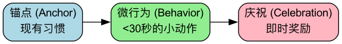

微习惯¶
我们都曾有过这样的雄心壮志：从明天起，每天坚持健身一小时、阅读50页书、冥想30分钟。然而，这些宏大的计划，往往在开始的几天后，就因为其巨大的执行门槛和对意志力的过度消耗，而迅速地宣告失败，并最终让我们陷入“计划-失败-自责”的负面循环。微习惯（Tiny Habits） 是一种颠覆传统习惯养成思路的、极其简单而又异常强大的行为设计方法。它由斯坦福大学行为设计实验室的创始人BJ Fogg博士提出，其核心思想在于，要想培养一个长期、稳定的习惯，关键不在于你有多大的意志力，而在于将你想要养成的行为，变得尽可能的“小”，小到你几乎不可能失败。
微习惯策略的精髓，是绕开对“动机”和“意志力”的依赖，转而聚焦于降低行为的门槛。它认为，任何一个宏大的目标，都可以被分解为一个微不足道的、可以在60秒内完成的“微习惯”。例如，将“每天做100个俯卧撑”这个令人望而生畏的目标，缩减为“每天做1个俯卧撑”。通过持续地、轻松地完成这个微小的、几乎不耗费任何意志力的行为，并立即给予自己积极的情感反馈，我们可以在大脑中，悄无声息地为这个新习惯，铺设好一条坚实的“神经通路”，并让它在未来自然而然地生长和壮大。
微习惯的行为模型（B=MAP）¶
BJ Fogg提出了一个著名的行为模型，来解释任何行为得以发生的三要素，这也是微习惯策略的理论基础。
B = MAP
- B - 行为（Behavior）：你希望发生的行为。
- M - 动机（Motivation）：你有多想做这件事。
- A - 能力（Ability）：你做这件事有多容易。
- P - 提示（Prompt）：有什么东西能提醒你去做这件事。
这个公式告诉我们，只有当动机、能力和提示三者同时满足时，一个行为才会发生。然而，动机是极其不稳定、靠不住的。因此，要想让一个行为能够持续地发生，最可靠的策略，不是去“提升动机”，而是去极大地提升“能力”，即让这个行为变得极其简单。
如何设计和实践一个微习惯¶
设计一个微习惯，需要遵循一个清晰的“ABC”配方。

-
第一步：找到你的“锚点”（Anchor Moment）
- 一个有效的“提示”，不应是一个闹钟或一个待办事项，而应是一个你已经拥有的、每天都会发生的、极其稳固的日常习惯。这个已有的习惯，就像一个“锚点”，你可以将你的新习惯，牢牢地“挂”在它的后面。
- 例如：“在我每天早上刷完牙之后...”、“在我每天晚上换上睡衣之后...”、“在我每天把车停好之后...”。
-
第二步：设计你的“微行为”（New Tiny Behavior）
- 将你宏大的目标，进行残酷的缩减，直到它变得“小得可笑”，小到你没有任何理由不去完成它。
- 宏大目标 -> 微行为：
- “每天用牙线清洁所有牙齿” -> “只用牙线清洁一颗牙齿”
- “每天冥想15分钟” -> “做一次深呼吸”
- “每天阅读一章书” -> “打开书，读一句话”
- “整理整个车库” -> “把一件放错位置的东西，放回原处”
-
第三步：立即“庆祝”（Celebration）
- 这是至关重要但最容易被忽略的一步。在你完成微行为的瞬间，你必须立即给自己一个积极的情感反馈，让你的大脑感受到一种“成功”的喜悦。这种即时的内在奖励，是让大脑将这个新行为与积极情绪进行关联、从而固化为长期习惯的关键。
- 庆祝可以是任何能让你真心感到愉悦的小动作：对自己说一声“Yes!”、握一下拳头、做一个胜利的手势、或者只是一个发自内心的微笑。
应用案例¶
案例一：培养健身习惯
- 糟糕的计划：“从今天起，我每天下班后要去健身房锻炼一小时。”（门槛太高，很容易因加班、疲劳而中断）
- 微习惯配方：
- 锚点：“在我每天晚上刷完牙之后，”
- 微行为：“我将立刻做两个俯卧撑。”
- 庆祝：“做完后，立刻在心里对自己说‘搞定！我真棒！’”
- 结果：这个行为几乎不可能失败。而一旦你开始做了，你很可能会发现，“既然都趴下了，不如多做几个吧”。但即使你真的只做了两个，你也成功地完成了今天的习惯，维护了连续性，并强化了你的“健身者”身份认同。
案例二：养成阅读习惯
- 糟糕的计划：“我每晚要读30页书。”
- 微习惯配方：
- 锚点：“在我每晚躺到床上之后，”
- 微行为：“我将立刻拿起枕边的书，翻开，读一页。”
- 庆祝：“读完后，微笑着对自己点点头。”
- 结果：这个习惯的重点，不在于“读了多少”，而在于“建立了每天拿起书本的仪式感”。一旦书被拿起，你很可能会自然而然地读下去。
案例三：保持厨房整洁
- 糟糕的计划：“我要每天都把厨房彻底打扫一遍。”
- 微习惯配方：
- 锚点：“在我每晚泡好一杯茶之后，”
- 微行为：“我将立刻把水槽里的一只碗洗干净。”
- 庆祝：“看着干净的碗，感受那种整洁带来的愉悦。”
- 结果：这个微小的行动，打破了面对一大堆脏碗时的“启动惯性”。一旦你开始洗第一只，就很有可能顺手把其他的也洗完。
微习惯的优势与挑战¶
核心优势
- 极高的成功率：通过将行为门槛降到最低，几乎消除了失败的可能性，从而打破了“计划-失败-自责”的恶性循环。
- 不依赖于意志力：它不消耗你宝贵的意志力资源，让你能轻松地、无压力地开始。
- 利用“行为飞轮”效应：微小的成功，会带来积极的情绪，而积极的情绪，又会让你更愿意去做，从而形成一个正向的、自我增强的良性循环。
- 身份认同的塑造：每天完成一个微小的健身行为，会让你逐渐地在内心深处，将自己视为一个“健身的人”，而这种身份认同，是长期坚持的根本动力。
潜在挑战
- 对“微小”的不屑：很多人，尤其是习惯了设定宏大目标的人，可能会对这种“小得可笑”的方法感到不屑，认为它“没有用”。理解其背后的行为设计原理，是克服这种心态的关键。
- 忘记“庆祝”：人们常常会执行了行为，但忘记了最关键的“庆祝”环节，从而使得习惯的神经通路无法被有效地强化。
延伸与关联¶
- 习惯回路（The Habit Loop）：微习惯的“锚点-微行为-庆祝”配方，是对习惯回路“暗示-惯常行为-奖赏”理论的一个极其精妙、极具实践性的应用。
- GTD (Getting Things Done)：GTD中的“两分钟原则”（如果一件事能在两分钟内完成，就立即去做），与微习惯中“降低行动门槛”的思想高度一致。
来源参考：BJ Fogg博士的著作《福格行为模型》（Tiny Habits: The Small Changes That Change Everything）是该方法的唯一、最权威的来源。书中详细阐述了其背后的B=MAP行为模型，以及如何系统性地设计和应用微习惯来改变生活的方方面面。